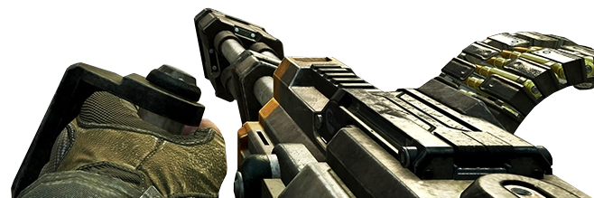

I just remembered, that when you get hit with projectile that generates spatter effects like; blood, spit etc etc. Basically making it realistic.
I suggest somewhat the same effect when rising from bodies of water; the view models could be dripping wet too.
Another special effect i want to suggest is that make the muzzle-flash 3D-ish, simmilar to the muzzle-flash they generate on the world model, but just significantly smaller.
In the original game, the flashlight has a battery, so i suggest a battery lifetime for the flashlight.
Another change is want to suggest is that allow gibbing of corpses with crowbar, just as long as players hit the corpses a few more times.
Lastly, for the Tau-Cannon. I would suggest it to be revamped; not just a simple-beam, add some lightning effects simmilar to the HL2 Beta version and SMOD of the Tau-Cannon. And for the Tau-Cannon model-view, i suggest a handle for the other hand much like the COD death machine, to look much more realistic; that the other handle is needed for such gun to be controlled properly.
